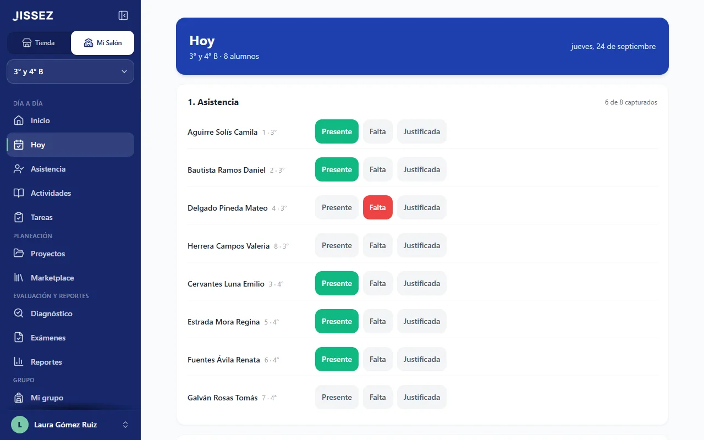
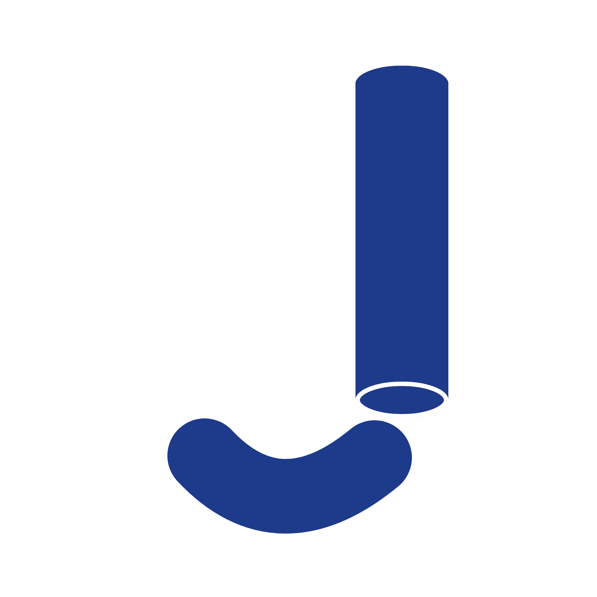
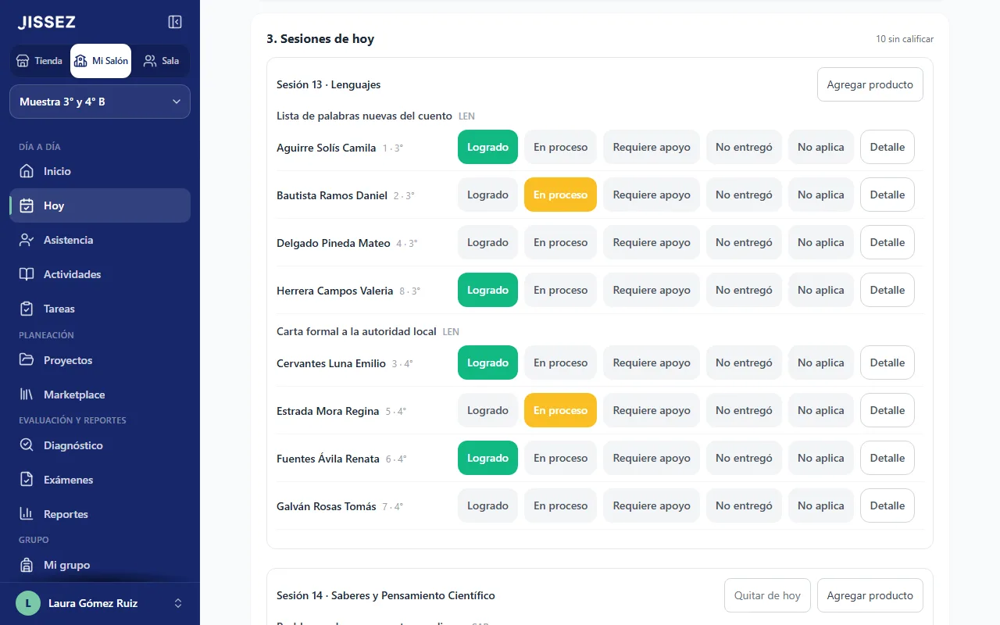
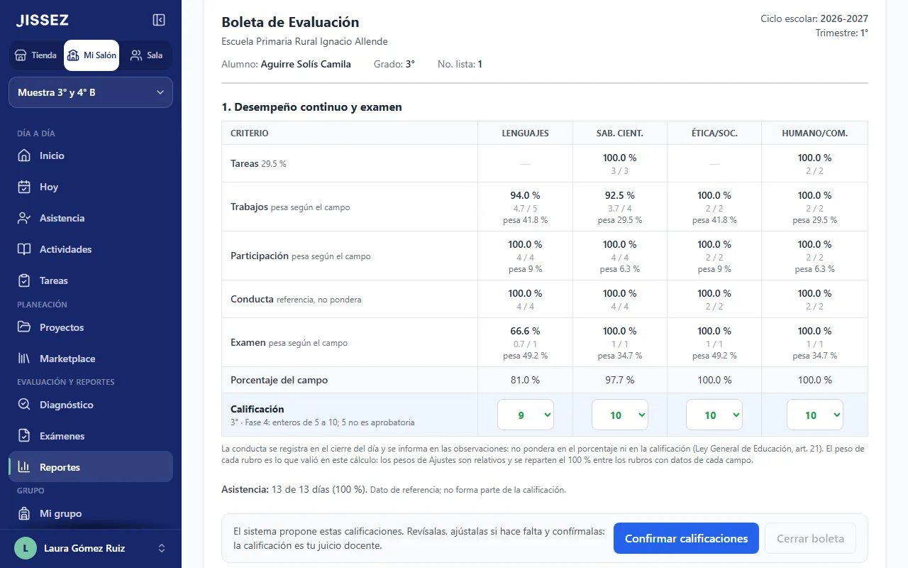
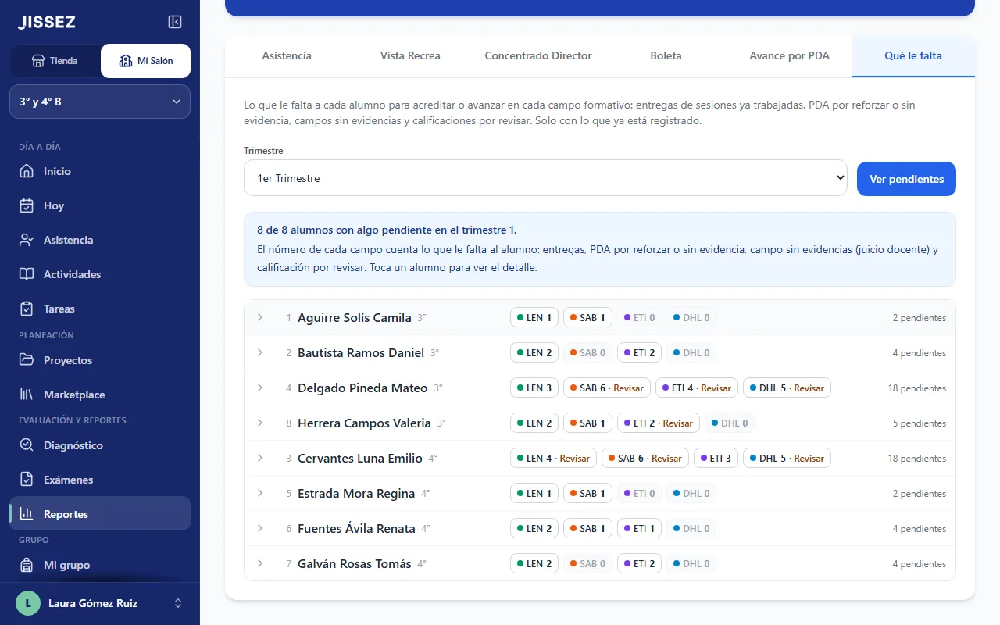
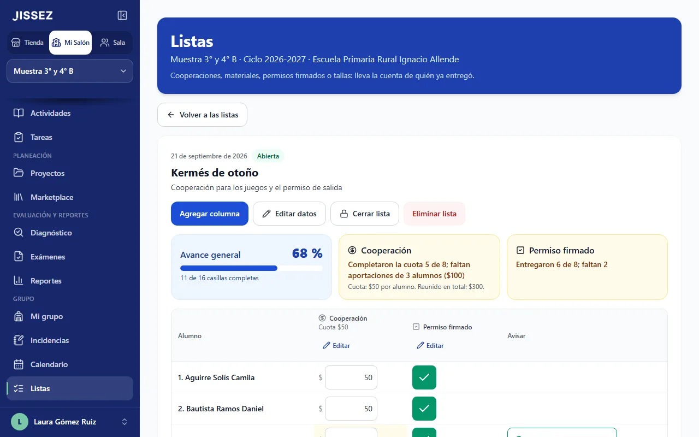

Hoy
Pasa lista con un toque, califica cada trabajo con semáforo y haz el cierre del día con participación y conducta.
La app para llevar el día a día de tu grupo con la Nueva Escuela Mexicana: pasas lista, calificas los trabajos con un toque y, al cierre del trimestre, la boleta sale de lo que ya capturaste. Pensada para multigrado y para la tablet del salón.


Jissez MS
Se instala como app
Todo lo que llevas en listas, cuadernos y hojas de cálculo, en un solo lugar y ligado a tu planeación. Tú capturas lo del día; Mi Salón junta lo del trimestre.
Campos formativos, PDA por grado y la escala de calificación oficial de la SEP para cada grado.
Un grupo con varios grados: cada alumno se califica en los trabajos de su grado o en los que tú le asignes, y en la boleta sigue en su grado.
Si la señal se va mientras capturas en Hoy, lo que marcas se guarda en tu tablet y se envía solo al volver.
Con el nombre "Jissez MS" en tu pantalla de inicio. Al abrirla, entras directo a Hoy.
Pasa lista con un toque, califica cada trabajo con semáforo y haz el cierre del día con participación y conducta.
Crea tus propios proyectos, con sus sesiones y los PDA de cada grado, o actividades sueltas sin proyecto. Próximamente, también las planeaciones de Jissez.
Formativa por PDA, que se llena al calificar, y diagnóstico de cuaderno, lectura y matemáticas de cada alumno.
Creas tu examen en Mi Salón e imprimes la hoja de respuestas, que revisas con la cámara de la tablet o tocando la letra. O subes los resultados de cualquier examen. Los dos cuentan en la boleta.
Calificación propuesta con la escala oficial, que tú confirmas; boleta imprimible, presentación para la junta y Excel.
Por campo formativo: trabajos sin entregar, PDA que necesitan apoyo y lo que falta para acreditar.
La ficha de cada alumno y los datos de su tutor, con un botón para escribirle por WhatsApp.
Calendario escolar de la SEP, rol de aseo si lo usas, cumpleaños y listas de cooperación y materiales.
Registra lo que pasa en el salón e imprime el documento para firmar con la dirección y la familia.
¿Improvisaste una actividad o una tarea? Agrégala en Hoy sin proyecto: se guarda en "Actividades del trimestre", cuenta para la boleta y después puedes pasarla a un proyecto del mismo trimestre.
Cada actividad o tarea es para todo el grupo, para uno o varios grados o para los alumnos que marques, y eliges con qué grado trabajan. Para la boleta, cada alumno sigue en su grado.
Si un alumno no terminó en clase, márcala Incompleta: Hoy te la muestra el siguiente día de clase, según el calendario de la SEP y los ajustes de tu grupo, y al revisarla vale el nivel que logró. Las tareas, igual: se revisan el siguiente día de clase, salvo que elijas otro día.

En "Sesiones de hoy" aparece un trabajo por grado de cada sesión, que puedes renombrar, y las actividades que agregues en plena clase. Tocas Logrado, En proceso o Requiere apoyo, y cada calificación deja evidencia en los PDA que evalúa. Se guarda al tocar, sin botón de guardar.
Mi Salón propone la calificación de cada campo formativo y redacta fortalezas, áreas de oportunidad y sugerencias. Tú revisas, cambias lo que quieras y confirmas: la calificación oficial es la tuya.


Antes del cierre ves, por alumno y campo, los trabajos sin entregar y los PDA que necesitan apoyo, en tono formativo. Así hablas con la familia con hechos, no con suposiciones.
El calendario escolar oficial con los ajustes de tu grupo, las listas de cooperación y materiales con lo reunido y lo que falta, los cumpleaños del mes y el rol de aseo, si lo usas.

Es la misma cuenta de la tienda de Jissez.
Indica tu estado, el ciclo escolar y el trimestre en curso; luego, el nombre del grupo, el tipo de organización de tu escuela y los grados que atiendes (en multigrado, márcalos todos).
Nombre y grado de cada uno. La ficha con los datos del tutor es opcional.
Crea tus propios proyectos: cada sesión trae los PDA de cada grado, un trabajo por grado para calificar y las tareas que planees. Si un día improvisas, agrega actividades sueltas. Las planeaciones de Jissez llegarán próximamente.
Cada día: la lista, las tareas por revisar, los trabajos de las sesiones y el cierre del día. Ahí mismo renombras un trabajo o agregas actividades y tareas.
Revisa la propuesta, confirma, imprime la boleta y prepara la junta con familias.
Queda como una app más en tu pantalla de inicio, abre directo en Hoy y sin la barra del navegador.
Con tu suscripción entras con la misma cuenta de la tienda.
Paga un trimestre a la vez.
Precio por anunciar
Los tres trimestres del ciclo en un solo pago.
Precio por anunciar
Si quieres, te avisamos a tu correo en cuanto puedas suscribirte.
Si ya compraste planeaciones en Jissez, tendrás un beneficio especial; te lo diremos al lanzar.
En Mi Salón, cada cuenta ve solo lo suyo: los datos de tu grupo se abren con tu cuenta y otras maestras no los ven. Al revisar un examen con la cámara, la foto de la hoja se lee en tu tablet y no se sube; solo se guardan las respuestas. Lo que Mi Salón prepara para una familia solo lleva a su hija o hijo. La imagen y el texto de las listas de cooperación y materiales no llevan nombres, y la presentación para la junta no los muestra salvo que tú lo actives. El rol de aseo sí lleva los nombres de los alumnos a quienes les toca: tú decides con quién lo compartes. Aviso de privacidad
Necesitas internet para abrir Mi Salón y entrar a tu cuenta. Si la señal se va mientras capturas en Hoy (asistencia, calificaciones y cierre del día) o en Exámenes (hojas escaneadas, respuestas, aciertos y «No presentó»), lo que marcas se guarda en tu tablet o celular y se envía solo cuando vuelve la señal. La pantalla te dice cuántas capturas faltan por enviar.
Sí. Un grupo puede tener varios grados. Cada actividad es para todo el grupo, para uno o varios grados o para los alumnos que marques; así, un alumno que va a otro ritmo puede trabajar con los PDA de otro grado. Para la boleta sigue en su grado, con la escala de su grado.
En el navegador de tu tablet, computadora o celular. Está pensada para la tablet en horizontal, con botones grandes. En Android, iPad y iPhone puedes instalarla como app ("Jissez MS").
En Mi Salón, solo tu cuenta: la base de datos le da a cada cuenta únicamente lo suyo, así que otras maestras no ven tu grupo. Jissez los guarda para darte el servicio y no los usa para publicidad. No pedimos la CURP. Las fotos de las hojas de respuestas se leen en tu tablet y no se suben. Los detalles están en el aviso de privacidad.
No. Creas tus propios proyectos en Mi Salón, con sus sesiones y los PDA de cada grado, o agregas actividades y tareas sueltas, sin proyecto, que después puedes pasar a un proyecto del mismo trimestre. Próximamente podrás usar también planeaciones de Jissez en Mi Salón.
Tienes dos caminos. Puedes crear tu examen en Mi Salón, con preguntas de opción múltiple, verdadero o falso, completar y abiertas, e imprimir el examen y la hoja de respuestas: las de opción múltiple y verdadero o falso las revisas con la cámara de la tablet o tocando la letra que marcó cada alumno, y las de completar y abiertas las calificas tú. O, con un examen que ya tienes, solo subes cuántos aciertos sacó cada alumno en cada campo formativo. Los dos cuentan en el rubro de examen de la boleta.
No. Mi Salón la propone con lo que capturaste y la escala oficial; tú la revisas y la confirmas. Sin tu confirmación la boleta no se cierra. Es un complemento de la boleta oficial (SIGED), no la sustituye.
Captura unos minutos al día; Mi Salón junta lo demás.